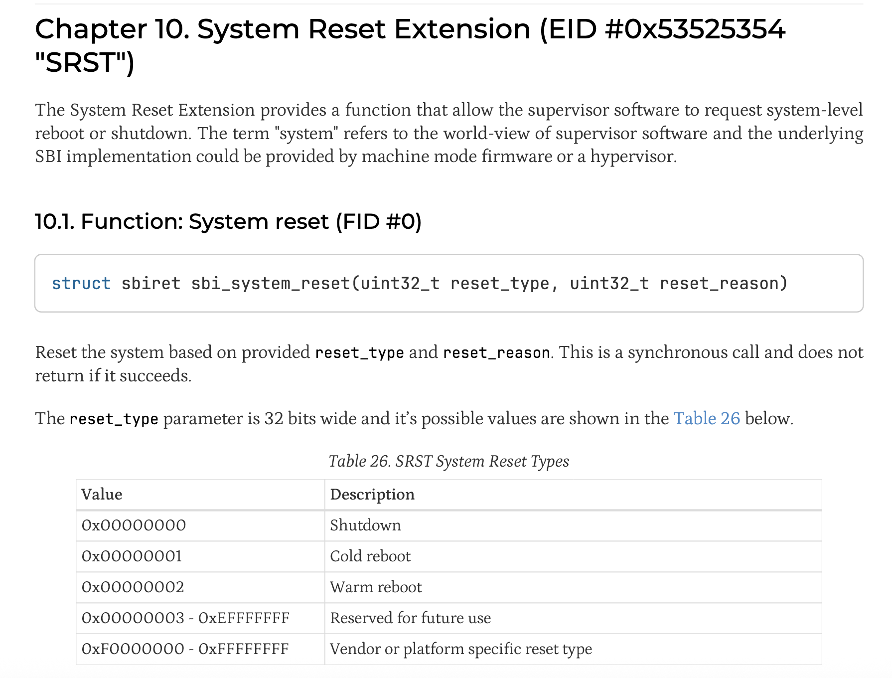
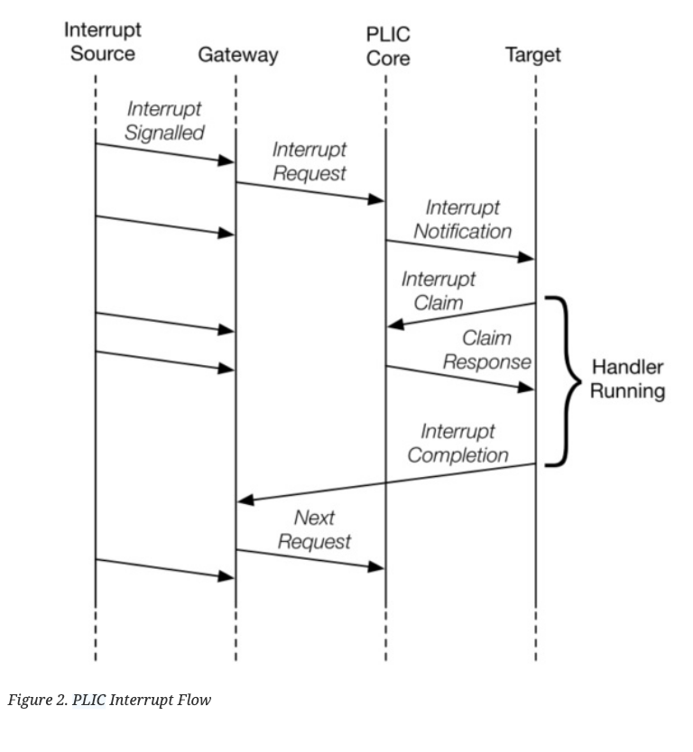

写OS是以前的念想。我不可能沿着这条路走下去，也不可能在这种方向找到工作，但还是想尝试一些没有做过的事情——哪怕没有什么“意义”。
主要记录一下这两天折腾riscv裸机程序。也许以后有时间可以继续把bare bone扩写成OS（但概率很低了，时间精力越来越不支持我做这些无法变现的东西）。
环境
- qemu 11.0
- u-boot 2026.04
- opensbi v1.8.1
- riscv64-linux-gnu-系列，gcc、gdb、binutils之类的
本来想在starfive visionfive 2的板子上试试，但是S-mode没玩明白，还是算了。
Exp1 S-mode程序
尝试使用opensbi + uboot在S-mode引导我的程序。
编译opensbi：
make ARCH=riscv CROSS_COMPILE=riscv64-linux-gnu- PLATFORM=generic FW_OPTIONS=0
编译uboot（注意替换opensbi firmware的路径）：
改配置
make menuconfig
编译
make ARCH=riscv CROSS_COMPILE=riscv64-linux-gnu- OPENSBI=${PATH_TO_OPENSBI}/build/platform/generic/firmware/fw_dynamic.bin -j8
概念
机器
qemu
virt这个机器上电的时候，pc初始化为0x80000000，从这个地方开始执行所有的代码。
在riscv架构下，特权层大概分为三层：
- M-mode，机器模式，权限最高的模式，可以执行所有指令。opensbi运行在这个模式。
- S-mode，supervisor模式，操作系统运行在这个模式。S-mode的程序通过SBI，使用M-mode下opensbi提供的服务。实际上也是用ecall之类的指令触发软中断。
- U-mode，用户模式。也就是用户态。用户态程序通过ABI使用OS提供的接口（也是用ecall指令）。
OpenSBI是一个广泛使用的SBI实现。SBI提供的服务包括开关机、输出字符之类的，类似UEFI的地位。
从底层高权限到高层低权限，实际上就是设置某些CSR（控制状态寄存器）的特权位。后续再想回到M-mode，只能靠trap陷入了。
使用uboot编译产生一个固件（这里是SPL），CPU上电之后，先进入M-mode，此时入口地址正好是uboot的M-mode程序。uboot启动opensbi之后，再调用自己的S-mode部分。
我们可以使用uboot加载自己的程序到内存中，比如load系列命令，加载完之后，直接一句go指令就可以跳转过去。当然对于使用linux内核格式的程序/elf程序，还可以使用boot系列命令。
RISC-V汇编快速复习
总体上比较简单。一般以i结尾表示涉及到立即数，否则就是操作寄存器。以a结尾表示涉及地址。l表示load，s表示save。第一个操作数就是目标寄存器。结尾的b、w表示byte、word。如：
li：加载立即数la：加载地址add：加法sb：写一个byte到对应的地址bne：不等则跳转auipc：往PC上加个数
读写CSR可用csr系列的指令
csrr：从某个csr读到某个寄存器csrw：写某个csrcsrs：置位某个csr（csr和某个寄存器OR一下，然后写回csr上）
编译和链接
C语言的程序要能运行，至少需要一个东西：栈。栈的初始化必须使用汇编来完成。另外全局变量一部分是定义在bss段的，也顺便定义一下。bss段要求初始化为0。
链接脚本告诉链接器每个段应该放到哪个位置，重定位之后，所有的指令都能有正确的地址。
外设
UART串口是机器debug的时候，最常用的通信方式。根据virt这个机器的内存映射定义（github上能找到），UART_BASE的地址是0x10000000。往这个地址写字符就是输出到UART。
程序
链接脚本，指定了某些段应该放在什么位置。我们的程序入口放在0x80400000。
OUTPUT_ARCH(riscv)
ENTRY(_start)
SECTIONS
{
. = 0x80400000;
.text : { *(.text.init) *(.text) }
. = 0x80600000;
.rodata : { *(.rodata) }
.data : { *(.data) }
.bss : { *(.bss) }
}
汇编
.section .text
.globl _start
_start:
# 清空 .bss 段
la t0, __bss_start
la t1, __bss_end
sub t1, t1, t0
li t2, 0
1: sb t2, 0(t0)
addi t0, t0, 1
addi t1, t1, -1
bnez t1, 1b
# 设置栈指针（需 16 字节对齐）
la sp, _stack_end
# 跳转到 C 的 main 函数
call main
loop:
nop
j loop
.section .data
.align 4
_stack_start:
.skip 1024
_stack_end:
.section .bss
.align 4
__bss_start:
.skip 1024
__bss_end:
C语言程序
#define UART0_BASE 0x10000000
#define UART_RBR 0
#define UART_THR 0
#define UART_IER 1
#define UART_LSR 5
#define UART_LSR_THRE (1 << 5)
#define UART_IER_RDI (1 << 0)
#define UART_IRQ 10
void put_char(char ch) {
*(volatile unsigned char *)(UART0_BASE + UART_THR) = ch;
}
void print(char *str) {
while (*str) {
put_char(*str++);
}
}
int main() {
print("Hello, RISC-V!\n");
return 0;
}
可以把最后的死循环改成调用SBI关机。这块可以参考SBI的文档。
# shutdown (call sbi srst extension)
li a0, 0
li a7, 0x53525354
li a6, 0
ecall
就和系统调用感觉上差不多。a7寄存器放SBI扩展ID，a6寄存器放函数ID。
这里用到的SBI接口是：

所以a0设为0，表示关机、a7设为0x53525354表示system
reset扩展，a6设为0表示system reset函数。
编译运行
riscv64-elf-as -march=rv64imac_zicsr -mabi=lp64 -o boot.o boot.S
riscv64-elf-gcc -march=rv64imac -mabi=lp64 -mcmodel=medany -c -o main.o main.c
riscv64-elf-ld -T link.ld -o start.elf boot.o main.o
riscv64-elf-objcopy -O binary start.elf start.bin
启动虚拟机
qemu-system-riscv64 -nographic -machine virt \
-bios uboot/spl/u-boot-spl \
-device loader,file=uboot/u-boot.itb,addr=0x80200000 \
-device loader,file=start.bin,addr=0x80400000
我们的程序会被加载到0x80400000。进入uboot之后，敲命令
go 0x80400000
即可跳转到我们的程序了。
Exp2 M-mode程序和中断处理
涉及中断的时候，感觉一切都变复杂了，所以先回退到M-mode。我暂时不指望这部分代码能直接拿到真实的板子上跑。
概念
risc-v的中断模式
riscv-privilege的文档手册非常的琐碎难读，不过幸好这年头有AI。
有4个CSR对M-mode的中断非常关键：
mtvecmstatusmiemcause
当有中断发生的时候，CPU会直接把PC设置为mtvec，即直接跳转过去（这点不同于传统的中断向量，后者直接把中断向量当作是服务程序的地址）。因此我们要把中断服务程序的首地址写到mtvec里面）
跳转后，中断服务程序可以读取mcause寄存器，里面存着中断的类型（异常/软中断/外部中断），根据具体的类型，进一步跳转到实际的中断处理程序。
只有启用了中断之后，才能收到中断信号。这里有两个地方要设置：
mstatus.MIE这个bit要置1，这个是个全局的开关，如果不开，永远收不到中断mie.MEIE要置1，这个是外部中断的开关
中断服务程序首先要保护现场，处理结束之后再恢复现场。最后mret实现中断返回。
如果是S-mode，需要把
mtvec换成stvec，以此类推。
PLIC
具体到处理外部中断，还需要涉及PLIC（platform-level-interrupt-controller，平台级中断控制器），用来管理中断优先级之类的东西。
查看virt的内存映射之后，可以找到PLIC_BASE对应的内存地址是0x0c000000。从0x0c000000 + 0x2000开始是PLIC使能区域blabla等等。
#define PLIC_BASE 0xc000000
#define PLIC_ENABLE_OFFSET 0x2000
#define PLIC_PENDING_OFFSET 0x1000
#define PLIC_THRESHOLD_OFFSET 0x200000
#define PLIC_CLAIM_OFFSET 0x200004
具体可以查看PLIC文档memory map的部分。
要让UART中断能发生，PLIC这边需要：
- 启用这个中断
- 中断优先级大于我们设置的阈值
具体处理中断的时候，我们需要CLAIM/COMPLETE。假设前面机器中断的部分已经进入了中断服务程序，并且知道了mcause就是外部中断，此时CLAIM就是从PLIC的CLAIM_OFFSET取出当前优先级最高的中断号。读取这个内存地址，同时也是告诉PLIC，“看看现在有什么中断要我处理”。COMPLETE就是把在中断处理完了之后，把中断号写回去，告诉PLIC（我处理完了，把这个中断从队列里面去掉）。

UART
在virt机器上，UART对应的PLIC中断号是0xA，也就是10。UART自己也有个启用和关闭中断的开关，需要打开。
#define UART0_BASE 0x10000000
#define UART_RBR 0
#define UART_THR 0
#define UART_IER 1
#define UART_LSR 5
#define UART_LSR_THRE (1 << 5)
#define UART_IER_RDI (1 << 0)
void init_uart() {
// Enable receive-data-available interrupts in the 16550 UART.
*(volatile unsigned char *)(UART0_BASE + UART_IER) = UART_IER_RDI;
(void)*(volatile unsigned char *)(UART0_BASE + UART_RBR);
}
来了中断之后，需要把UART缓冲区的字符读掉，才能清掉UART的状态。
这块具体得参考16550的手册。
程序
链接脚本
OUTPUT_ARCH(riscv)
ENTRY(_start)
SECTIONS
{
. = 0x80000000;
.text : { *(.text.init) *(.text) }
. = 0x80200000;
.rodata : { *(.rodata) }
.data : { *(.data) }
.bss : { *(.bss) }
}
汇编
.section .text
.globl _start
_start:
# 清空 .bss 段
la t0, __bss_start
la t1, __bss_end
sub t1, t1, t0
li t2, 0
1: sb t2, 0(t0)
addi t0, t0, 1
addi t1, t1, -1
bnez t1, 1b
# 设置栈指针
la sp, _stack_end
# 设置中断向量
la t0, int_vec
csrw mtvec, t0
# 使能机器模式外部中断（MEIE）
li t0, (1 << 11)
csrs mie, t0
# 使能全局中断
csrsi mstatus, 8 # 设置 MIE 位
# 跳转到 main
call main
loop:
wfi # wait for new interrupt
j loop
int_vec:
addi sp, sp, -80
sd ra, 0(sp)
sd t0, 8(sp)
sd t1, 16(sp)
sd t2, 24(sp)
sd t3, 32(sp)
sd a0, 40(sp)
sd a1, 48(sp)
sd a2, 56(sp)
sd a3, 64(sp)
sd a4, 72(sp)
csrr t0, mcause
bgez t0, int_done # 最高位为 0 表示异常，不是中断
slli t0, t0, 1
srli t0, t0, 1
li t1, 11 # Machine external interrupt
bne t0, t1, int_done
li t0, 0x0c200004 # PLIC claim/complete, hart 0 M-mode
lw t1, 0(t0) # claim IRQ id
li t2, 10 # UART0 IRQ on QEMU virt
bne t1, t2, plic_complete
li t3, 0x10000000 # UART0 base
lb a0, 0(t3) # 读取 RBR，清掉 RX pending
sb a0, 0(t3) # 回显收到的字符
plic_complete:
sw t1, 0(t0) # complete IRQ
int_done:
ld ra, 0(sp)
ld t0, 8(sp)
ld t1, 16(sp)
ld t2, 24(sp)
ld t3, 32(sp)
ld a0, 40(sp)
ld a1, 48(sp)
ld a2, 56(sp)
ld a3, 64(sp)
ld a4, 72(sp)
addi sp, sp, 80
mret
.section .data
.align 4
_stack_start:
.skip 1024
_stack_end:
.section .bss
.align 4
__bss_start:
.skip 1024
__bss_end:
C语言部分
#define UART0_BASE 0x10000000
#define UART_RBR 0
#define UART_THR 0
#define UART_IER 1
#define UART_LSR 5
#define UART_LSR_THRE (1 << 5)
#define UART_IER_RDI (1 << 0)
#define PLIC_BASE 0xc000000
#define PLIC_ENABLE_OFFSET 0x2000
#define PLIC_PENDING_OFFSET 0x1000
#define PLIC_THRESHOLD_OFFSET 0x200000
#define PLIC_CLAIM_OFFSET 0x200004
#define UART_IRQ 10
void put_char(char ch) {
while ((*(volatile unsigned char *)(UART0_BASE + UART_LSR) & UART_LSR_THRE) == 0) {
}
*(volatile unsigned char *)(UART0_BASE + UART_THR) = ch;
}
void print(char *str) {
while (*str) {
put_char(*str++);
}
}
void init_plic() {
// Enable UART interrupt
*(volatile unsigned *)(PLIC_BASE + PLIC_ENABLE_OFFSET + (UART_IRQ / 32) * 4) |= (1 << (UART_IRQ % 32));
// Set priority for UART interrupt
*(volatile unsigned *)(PLIC_BASE + (UART_IRQ * 4)) = 1;
// Set threshold to 0 to allow all interrupts
*(volatile unsigned *)(PLIC_BASE + PLIC_THRESHOLD_OFFSET) = 0;
}
void init_uart() {
// Enable receive-data-available interrupts in the 16550 UART.
*(volatile unsigned char *)(UART0_BASE + UART_IER) = UART_IER_RDI;
(void)*(volatile unsigned char *)(UART0_BASE + UART_RBR);
}
int main() {
init_uart();
init_plic();
print("Hello, RISC-V!\n");
return 0;
}